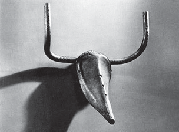
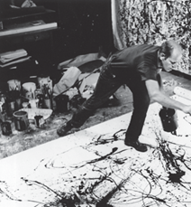
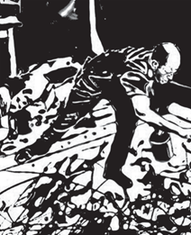
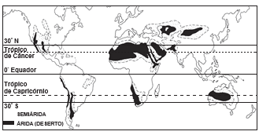
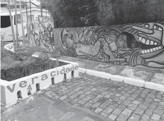
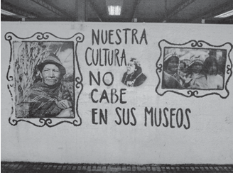

A pet is certainly a great friend. After a difficult day, pet owners quite literally feel the love.
In fact, for nearly 25 years, research has shown that living with pets provides certain health benefits. Pets help lower blood pressure and lessen anxiety. They boost our immunity. They can even help you get dates.
Allergy Fighters: A growing number of studies have suggested that kids growing up in a home with “furred animals” will have less risk of allergies and asthma.
Date Magnets: Dogs are great for making love connections. Forget Internet matchmaking — a dog is a natural conversation starter.
Dogs for the Aged: Walking a dog or just caring for a pet — for elderly people who are able — can provide exercise and companionship.
Good for Mind and Soul: Like any enjoyable activity, playing with a dog can elevate levels of serotonin and dopamine — nerve transmitters that are known to have pleasurable and calming properties.
Good for the Heart: Heart attack patients who have pets survive longer than those without, according to several studies.
DAVIS, J. L. Disponível em: www.webmd.com. Acesso em: 21 abr. 2013 (adaptado).
Ao discutir sobre a influência de animais de estimação no bem-estar do ser humano, a autora, a fim de fortalecer seus argumentos, utiliza palavras e expressões como research, a growing number of research e several studies com o objetivo de
Questao 2
LETTER TO THE EDITOR: Sugar fear-mongering unhelpful
By The Washington Times Tuesday, June 25, 2013
In his recent piece “Is obesity a disease?” (Web, June 19), Dr. Peter Lind refers to high-fructose corn syrup and other “manufactured sugars” as “poison” that will “guarantee storage of fat in the body.” Current scientific research strongly indicates that obesity results from excessive calorie intake combined with a sedentary lifestyle. The fact is Americans are consuming more total calories now than ever before. According to the U.S. Department of Agriculture, our total per-capita daily caloric intake increased by 22 percent from 2,076 calories per day in 1970 to 2,534 calories per day in 2010 — an additional 458 calories, only 34 of which come from increased added sugar intake. A vast majority of these calories come from increased fats and flour/ cereals. Surprisingly, the amount of caloric sweeteners (i.e. sugar, high-fructose, corn syrup, honey, etc.). Americans consume has actually decreased over the past decade. We need to continue to study the obesity epidemic to see what more can be done, but demonizing one specific ingredient accomplishes nothing and raises unnecessary fears that get in the way of real solutions.
Ao abordar o assunto “obesidade”, em uma seção de
jornal, o autor
Questao 3
In this life
Sitting on a park bench Thinking about a friend of mine He was only twenty-three Gone before he had his time.
It came without a warning
Didnꞌt want his friends to see him cry He knew the day was dawning
And I didnꞌt have a chance to say goodbye
MADONNA. Erotica. Estados Unidos: Maverick, 1992.
A canção, muitas vezes, é uma forma de manifestar sentimentos e emoções da vida cotidiana. Por exemplo, o sofrimento retratado nessa canção foi causado
Questao 4
If children live with criticism, they learn to condemn If children live with fear, they learn to be apprehensive. If children live with pity, they learn to feel sorry for themselves. If children live with ridicule, they learn to feel shy.
If children live with tolerance, they learn patience. If children live with praise, they learn appreciation. If children live with acceptance, they learn to love.
If children live with approval, they learn to like themselves. If children live with recognition, they learn it is good to have a goal.
If children live with sharing, they learn generosity. If children live with fairness, they learn justice.
If children live with kindness and consideration, they learn respect.
If children live with friendliness, they learn the world is a nice place in which to live.
NOLTE, D. L. Disponível em: www.americanfamilytraditions.com. Acesso em: 30 jul. 2012..
Valores culturais de um povo revelam sua forma de ser, agir e pensar. Na concepção da autora, as diferentes formas de educar crianças nos Estados Unidos confirmam que as crianças
Questao 5
KEEFER, M. Disponível em: www.nj.com. Acesso em: 3 dez. 2018.
No cartum, o estudante faz uma pergunta usando turn this thing on por
Pela análise do conteúdo, constata-se que essa campanha publicitária tem como função social
Questao 7
Um amor desse
Era 24 horas lado a lado
Um radar na pele, aquele sentimento alucinado Coração batia acelerado
Bastava um olhar pra eu entender Que era hora de me entregar pra você Palavras não faziam falta mais
Ah, só de lembrar do seu perfume Que arrepio, que calafrio
Que o meu corpo sente
Nem que eu queira, eu te apago da minha mente
Ah, esse amor
Deixou marcas no meu corpo Ah, esse amor
Só de pensar, eu grito, eu quase morro
AZEVEDO, N.; LEÃO, W.; QUADROS, R. Coração pede socorro.
Rio de Janeiro: Som Livre, 2018 (fragmento).
Essa letra de canção foi composta especialmente para uma campanha de combate à violência contra as mulheres, buscando conscientizá-las acerca do limite entre relacionamento amoroso e relacionamento abusivo. Para tanto, a estratégia empregada na letra é a
Questao 8
Meu caro Sherlock Holmes, algo horrível aconteceu às três da manhã no Jardim Lauriston. Nosso homem que estava na vigia viu uma luz às duas da manhã saindo de uma casa vazia. Quando se aproximou, encontrou a porta aberta e, na sala da frente, o corpo de um cavalheiro bem vestido. Os cartões que estavam em seu bolso tinham o nome de Enoch J. Drebber, Cleveland, Ohio, EUA. Não houve assalto e nosso homem não conseguiu encontrar algo que indicasse como ele morreu. Não havia marcas de sangue, nem feridas nele. Não sabemos como ele entrou na casa vazia. Na verdade, todo assunto é um quebra-cabeça sem fim. Se puder vir até a casa seria ótimo, se não, eu lhe conto os detalhes e gostaria muito de saber sua opinião. Atenciosamente, Tobias Gregson.
DOYLE, A. C. Um estudo em vermelho. Cotia: Pé de Letra, 2017.
Considerando o objetivo da carta de Tobias Gregson, a sequência de enunciados negativos presente nesse texto tem a função de
Questao 9
Mídias: aliadas ou inimigas da educação física escolar?
No caso do esporte, a mediação efetuada pela câmera de TV construiu uma nova modalidade de consumo: o esporte telespetáculo, realidade textual relativamente autônoma face à prática “real” do esporte, construída pela codificação e mediação dos eventos esportivos efetuados pelo enquadramento, edição das imagens e comentários, interpretando para o espectador o que ele está vendo. Esse fenômeno tende a valorizar a forma em relação ao conteúdo, e para tal faz uso privilegiado da linguagem audiovisual com ênfase na imagem cujas possibilidades são levadas cada vez mais adiante, em decorrência dos avanços tecnológicos. Por outro lado, a narração esportiva propõe uma concepção hegemônica de esporte: esporte é esforço máximo, busca da vitória, dinheiro... O preço que se paga por sua espetacularização é a fragmentação do fenômeno esportivo. A experiência global do ser-atleta é modificada: a sociabilização no confronto e a ludicidade não são vivências privilegiadas no enfoque das mídias, mas as eventuais manifestações de violência, em partidas de futebol, por exemplo, são exibidas e reexibidas em todo o mundo.
BETTI, M. Motriz, n. 2, jul.-dez. 2001 (adaptado).
A reflexão trazida pelo texto, que aborda o esporte telespetáculo, está fundamentada na
Questao 10
Disponível em: www.essl.pt. Acesso em: 9 maio 2019 (adaptado).
Essa campanha se destaca pela maneira como utiliza a linguagem para conscientizar a sociedade da necessidade
de se acabar com o bullying. Tal estratégia está centrada no(a)
Questao 11
Esporte e cultura: análise acerca da esportivização de práticas corporais nos jogos indígenas
Nos Jogos dos Povos Indígenas, observa-se que as práticas corporais realizadas envolvem elementos tradicionais (como as pinturas e adornos corporais) e modernos (como a regulamentação, a fiscalização e a padronização). O arco e flecha e a lança, por exemplo, são instrumentos tradicionalmente utilizados para a caça e a defesa da comunidade na aldeia. Na ocasião do evento, esses artefatos foram produzidos pela própria etnia, porém sua estruturação como “modalidade esportiva” promoveu uma semelhança entre as técnicas apresentadas, com o sentido único da competição.
ALMEIDA, A. J. M.; SUASSUNA, D. M. F. A. Pensar a prática, n. 1, jan.-abr. 2010 (adaptado).
A relação entre os elementos tradicionais e modernos nos Jogos dos Povos Indígenas desencadeou a
Quadrinista surda faz sucesso na CCXP
com narrativas silenciosas
A área de artistas independentes da Comic Con Experience (CCXP) deste ano é a maior da história do evento geek, são mais de 450 quadrinistas e ilustradores no Artistsꞌ Alley.
E a diversidade vai além do estilo das HQ. Em uma das mesas na fila F, senta a quadrinista com deficiência auditiva Ju Loyola, com suas histórias que classifica como “narrativas silenciosas”. São histórias que podem ser compreendidas por crianças e adultos, e pessoas de qualquer nacionalidade, pelo simples motivo de não terem uma única palavra.
A artista não escreve roteiros convencionais para suas obras. Sua experiência de ter que entender a comunicação pelo que vê faz com que ela se identifique muito mais com o que observa do que com o que as pessoas dizem.
E basta folhear suas obras que fica claro que elas não são histórias em quadrinhos que perderam as palavras, mas sim que ganharam uma nova perspectiva.
O Texto I exemplifica a obra de uma artista surda, que promove uma experiência de leitura inovadora, divulgada no Texto II. Independentemente de seus objetivos, ambos os textos
Questao 13
HELOÍSA: Faz versos? PINOTE: Sendo preciso... Quadrinhas... Acrósticos...
Sonetos... Reclames.
HELOÍSA: Futuristas?
PINOTE: Não senhora! Eu já fui futurista. Cheguei a acreditar na independência... Mas foi uma tragédia! Começaram a me tratar de maluco. A me olhar de esguelha. A não me receber mais. As crianças choravam em casa. Tenho três filhos. No jornal também não pagavam, devido à crise. Precisei viver de bicos. Ah Reneguei tudo. Arranjei aquele instrumento (Mostra a faca) e fiquei passadista
ANDRADE, O. O rei da vela. São Paulo: Globo, 2003.
O fragmento da peça teatral de Oswald de Andrade ironiza a reação da sociedade brasileira dos anos 1930 diante de determinada vanguarda europeia. Nessa visão, atribui-se ao público leitor uma postura
Questao 14
A viagem
Que coisas devo levar
nesta viagem em que partes?
As cartas de navegação só servem a quem fica.
Com que mapas desvendar um continente
que falta?
Estrangeira do teu corpo tão comum
quantas línguas aprender para calar-me?
Também quem fica
procura
um oriente.
Também
a quem fica
cabe uma paisagem nova
e a travessia insone do desconhecido e a alegria difícil da descoberta.
O que levas do que fica,
o que, do que levas, retiro?
MARQUES, A. M. In: SANT’ANNA, A. (Org.). Rua Aribau.
Porto Alegre: Tag, 2018.
A viagem e a ausência remetem a um repertório poético tradicional. No poema, a voz lírica dialoga com essa tradição, repercutindo a
Questao 15
O Instituto de Arte de Chicago disponibilizou para visualização on-line, compartilhamento ou download (sob licença Creative Commons), 44 mil imagens de obras de arte em altíssima resolução, além de livros, estudos e pesquisas sobre a história da arte.
Para o historiador da arte, Bendor Grosvenor, o sucesso das coleções on-line de acesso aberto, além de democratizar a arte, vem ajudando a formar um novo público museológico. Grosvenor acredita que quanto mais pessoas forem expostas à arte on-line, mais visitas pessoais acontecerão aos museus.
A coleção está disponível em seis categorias: paisagens urbanas, impressionismo, essenciais, arte africana, moda e animais. Também é possível pesquisar pelo nome da obra, estilo, autor ou período. Para navegar pela imagem em alta definição, basta clicar sobre ela e utilizar a ferramenta de zoom. Para fazer o download, disponível para obras de domínio público, é preciso utilizar a seta localizada do lado inferior direito da imagem.
A função da linguagem que predomina nesse texto se
caracteriza por
Questao 16
Ed Mort só vai
Mort. Ed Mort. Detetive particular. Está na plaqueta. Tenho um escritório numa galeria de Copacabana entre um fliperama e uma loja de carimbos. Dá só para o essencial, um telefone mudo e um cinzeiro. Mas insisto numa mesa e numa cadeira. Apesar do protesto das baratas. Elas não vencerão. Comprei um jogo de máscaras. No meu trabalho o disfarce é essencial. Para escapar dos credores. Outro dia entrei na sala e vi a cara do King Kong andando pelo chão. As baratas estavam roubando as máscaras. Espisoteei meia dúzia. As outras atacaram a mesa. Consegui salvar a minha Bic e o jornal. O jornal era novo, tinha só uma semana. Mas elas levaram a agenda. Saí ganhando. A agenda estava em branco. Meu último caso fora com a funcionária do Erótica, a primeira ótica da cidade com balconista topless. Acabara mal. Mort. Ed Mort. Está na plaqueta.
VERISSIMO, L. F. Ed Mort: todas as histórias. Porto Alegre: L&PM, 1997 (adaptado).
Nessa crônica, o efeito de humor é basicamente construído por uma
Questao 17
Disponível em: http://epoca.globo.com. Acesso em: 20 mar. 2014
De acordo com esse infográfico, as redes sociais estimulam diferentes comportamentos dos usuários que revelam
Questao 18
O que é software livre
Software livre é qualquer programa de computador construído de forma colaborativa, via internet, por uma comunidade internacional de desenvolvedores independentes. São centenas de milhares de hackers, que negam sua associação com os “violadores de segurança”. Esses desenvolvedores de software se recusam a reconhecer o significado pejorativo do termo e continuam usando a palavra hacker para indicar “alguém que ama programar e que gosta de ser hábil e engenhoso”. Além disso, esses programas são entregues à comunidade com o código fonte aberto e disponível, permitindo que a ideia original possa ser aperfeiçoada e devolvida novamente à comunidade. Nos programas convencionais, o código de programação é secreto e de propriedade da empresa que o desenvolveu, sendo quase impossível decifrar a programação.
O que está em jogo é o controle da inovação tecnológica. Software livre é uma questão de liberdade de expressão e não apenas uma relação econômica. Hoje existem milhares de programas alternativos construídos dessa forma e uma comunidade de usuários com milhões de membros no mundo.
BRANCO, M. Software livre e desenvolvimento social e económico. In: CASTELLS, M.; CARDOSO, G. (Org).
A sociedade em rede: do conhecimento à acção política. Lisboa: Imprensa Nacional, 2005 (adaptado).
A criação de softwares livres contribui para a produção do conhecimento na sociedade porque
Questao 19
Expostos na web desde a gravidez
Mais da metade das mães e um terço dos pais ouvidos em uma pesquisa sobre compartilhamento paterno em mídias sociais discutem nas redes sociais sobre a educação dos filhos. Muitos são pais e mães de primeira viagem, frutos da geração Y (que nasceu junto com a internet) e usam esses canais para saberem que não estão sozinhos na empreitada de educar uma criança. Há, contudo, um risco no modo como as pessoas estão compartilhando essas experiências. É a chamada exposição parental exagerada, alertam os pesquisadores.
De acordo com os especialistas no assunto, se você compartilha uma foto ou vídeo do seu filho pequeno fazendo algo ridículo, por achar engraçadinho, quando a criança tiver seus 11, 12 anos, pode se sentir constrangida. A autoconsciência vem com a idade.
A exibição da privacidade dos filhos começa a assumir uma característica de linha do tempo e eles não participaram da aprovação ou recusa quanto à veiculação desses conteúdos. Assim, quando a criança cresce, sua privacidade pode já estar violada.
OTONI, A. C. O Globo, 31 mar. 2015 (adaptado).
Sobre o compartilhamento parental excessivo em mídias sociais, o texto destaca como impacto o(a)
Questao 20
O projeto DataViva consiste na oferta de dados oficiais sobre exportações, atividades econômicas, localidades e ocupações profissionais de todo o Brasil. Num primeiro momento, o DataViva construiu uma ferramenta que permitia a análise da economia mineira embasada por essa perspectiva metodológica complexa e diversa. No entanto, diante das possibilidades oferecidas pelas bases de dados trabalhadas, a plataforma evoluiu para um sistema mais completo. De maneira interativa e didática, o usuário é guiado por meio das diversas formas de navegação dos aplicativos. Além de informações sobre os produtos exportados, bem como acerca do volume das exportações em cada um dos estados e municípios do País, em poucos cliques, o interessado pode conhecer melhor o perfil da população, o tipo de atividade desenvolvida, as ocupações formais e a média salarial por categoria.
MANTOVANI, C. A. Guardião de informações. Minas faz Ciência,
n. 58, jun.-jul.-ago. 2014 (adaptado)
Entre as novas possibilidades promovidas pelo
desenvolvimento de novas tecnologias, o texto destaca a
Questão 21
Menina
A máquina de costura avançava decidida sobre
o pano. Que bonita que a mãe era, com os alfinetes
na boca. Gostava de olhá-la calada, estudando seus
gestos, enquanto recortava retalhos de pano com a
tesoura. Interrompia às vezes seu trabalho, era quando
a mãe precisava da tesoura. Admirava o jeito decidido
da mãe ao cortar pano, não hesitava nunca, nem errava.
A mãe sabia tanto! Tita chamava-a de ( ) como quem diz
( ). Tentava não pensar as palavras, mas sabia que na
mesma hora da tentativa tinha-as pensado. Oh, tudo era
tão difícil. A mãe saberia o que ela queria perguntar-lhe
intensamente agora quase com fome depressa depressa
antes de morrer, tanto que não se conteve e — Mamãe,
o que é desquitada? — atirou rápida com uma voz
sem timbre. Tudo ficou suspenso, se alguém gritasse o
mundo acabava ou Deus aparecia — sentia Ana Lúcia.
Era muito forte aquele instante, forte demais para uma
menina, a mãe parada com a tesoura no ar, tudo sem
solução podendo desabar a qualquer pensamento,
a máquina avançando desgovernada sobre o vestido
de seda brilhante espalhando luz luz luz.
ÂNGELO, I. Menina. In: A face horrível. São Paulo: Lazuli, 2017.
Questão 22
Uma ouriça
Se o de longe esboça lhe chegar perto,
se fecha (convexo integral de esfera),
se eriça (bélica e multiespinhenta):
e, esfera e espinho, se ouriça à espera.
Mas não passiva (como ouriço na loca);
nem só defensiva (como se eriça o gato);
sim agressiva (como jamais o ouriço),
do agressivo capaz de bote, de salto
(não do salto para trás, como o gato):
daquele capaz de salto para o assalto.
Se o de longe lhe chega em (de longe),
de esfera aos espinhos, ela se desouriça.
Reconverte: o metal hermético e armado
na carne de antes (côncava e propícia),
e as molas felinas (para o assalto),
nas molas em espiral (para o abraço).
MELO NETO, J. C. A educação pela pedra. Rio de Janeiro:
Nova Fronteira, 1997.
Com apuro formal, o poema tece um conjunto semântico
que metaforiza a atitude feminina de
Nesse cartaz, o uso da imagem do calçado aliada ao
texto verbal tem o objetivo de
Questão 24
Blues da piedade
Vamos pedir piedade
Senhor, piedade
Pra essa gente careta e covarde
Vamos pedir piedade
Senhor, piedade
Lhes dê grandeza e um pouco de coragem
CAZUZA. Cazuza: o poeta não morreu. Rio de Janeiro:
Universal Music, 2000 (fragmento).
Todo gênero apresenta elementos constitutivos que
condicionam seu uso em sociedade. A letra de canção
identifica-se com o gênero ladainha, essencialmente,
pela utilização da sequência textuaal
Questão 25
Com o enredo que homenageou o centenário do
Rei do Baião, Luiz Gonzaga, a Unidos da Tijuca foi
coroada no Carnaval 2012.
A penúltima escola a entrar na Sapucaí, na segunda
noite de desfiles, mergulhou no universo do cantor e
compositor brasileiro e trouxe a cultura nordestina com
criatividade para a Avenida, com o enredo O dia em que
toda a realeza desembarcou na Avenida para coroar o
Rei Luiz do Sertão
Disponível em: www.cultura.rj.gov.br.
Acesso em: 15 maio 2012 (adaptado).
A notícia relata um evento cultural que marca a
Questão 26
Texto I
A promessa da felicidade
O Estatuto do Idoso completou 15 anos em 2018 e só no primeiro semestre o Disque 100 recebeu 16 mil
denúncias de violação de direitos dos idosos em todo o País.
Para especialistas da área, o aumento no número de denúncias pode ser consequência do encorajamento dos
mais velhos na busca pelos direitos. Mas também pode refletir uma onda crescente de violência na sociedade e
dentro das próprias famílias.
Políticas públicas mais eficazes no atendimento ao idoso são o mínimo que um país deve estabelecer. O Brasil
está ficando para trás e é preciso levar em consideração que o País envelhece (tendência mundial) sem estar
preparado para arcar com os desafios, como criar uma rede de proteção, preparar os serviços de saúde pública e
dar suporte às famílias que precisam cuidar de seus idosos dependentes.
Na comparação entre os textos, conclui-se que as regras do Estatuto do Idoso
Questão 27
Educação para a saúde mediante programas de educação física escolar
A educação para a saúde deverá ser alcançada mediante interação de ações que possam envolver o próprio homem mediante suas atitudes frente às exigências ambientais representadas pelos hábitos alimentares, estado de estresse, opções de lazer, atividade física, agressões climáticas etc. Dessa forma, parece evidente que o estado de ser saudável não é algo estático. Pelo contrário, torna-se necessário adquiri-lo e construí-lo de forma individualizada constantemente ao longo de toda a vida, apontando para o fato de que saúde é educável e, portanto, deve ser tratada não apenas com base em referenciais de natureza biológica e higienista, mas sobretudo em um contexto didático-pedagógico.
GUEDES, D. P. Motriz, n. 1, 1999
A educação para a saúde pressupõe a adoção de comportamentos com base na interação de fatores relacionados à
Questão 28
Os subúrbios do Rio de Janeiro foram a primeira coisa a aparecer no mundo, antes mesmo dos vulcões e dos cachalotes, antes de Portugal invadir, antes do
Getúlio Vargas mandar construir casas populares. O bairro do Queím, onde nasci e cresci, é um deles. Aconchegado entre o Engenho Novo e Andaraí, foi feito daquela argila primordial, que se aglutinou em diversos formatos: cães soltos, moscas e morros, uma estação de trem, amendoeiras e barracos e sobrados, botecos e arsenais de guerra, armarinhos e bancas de jogo do bicho e um terreno enorme reservado para o cemitério. Mas tudo ainda estava vazio: faltava gente.
Não demorou. As ruas juntaram tanta poeira que o homem não teve escolha a não ser passar a existir, para varrê-las. À tardinha, sentar na varanda das casas e reclamar da pobreza, falar mal dos outros e olhar para as calçadas encardidas de sol, os ônibus da volta do trabalho sujando tudo de novo.
HERINGER, V. O amor dos homens avulsos.
São Paulo: Cia. das Letras, 2016.
Traçando a gênese simbólica de sua cidade, o narrador imprime ao texto um sentido estético fundamentado na
Questão 29
A rede é, antes de tudo, um instrumento de comunicação entre pessoas, um laço virtual em que as comunidades auxiliam seus membros a aprender o que querem saber. Os dados não representam senão a matéria-prima de um processo intelectual e social vivo, altamente elaborado. Enfim, toda inteligência coletiva do mundo jamais dispensará a inteligência pessoal, o esforço individual e o tempo necessário para aprender, pesquisar, avaliar e integrar-se a diversas comunidades, sejam elas virtuais ou não. A rede jamais pensará em seu lugar, fique tranquilo.
LÉVY, P. A máquina universo: criação, cognição e cultura
informática. Porto Alegre: Artmed, 1998
No contexto das novas tecnologias de informação e
comunicação, a circulação de saberes depende da
Questão 30
Texto I
Estratos
Na passagem de uma língua para outra, algo sempre permanece, mesmo que não haja ninguém para se lembrar desse algo. Pois um idioma retém em si mais memórias que os seus falantes e, como uma chapa mineral marcada por camadas de uma história mais antiga do que aquela dos seres viventes, inevitavelmente carrega em si a impressão das eras pelas quais passou. Se as “línguas são arquivos da história”, elas carecem de livros de registro e catálogos. Aquilo que contêm pode apenas ser consultado em parte, fornecendo ao pesquisador menos os elementos de uma biografia do que um estudo geológico de uma sedimentação realizada em um período sem começo ou sem fim definido.
HELLER-ROAZEN, D. Ecolalias: sobre o esquecimento das línguas.
Campinas: Unicamp, 2010
Texto II
Na reflexão gramatical dos séculos XVI e XVII, a influência árabe aparece pontualmente, e se reveste sobretudo de item bélico fundamental na atribuição de rudeza aos idiomas português e castelhano por seus respectivos detratores. Parecer com o árabe, assim, é uma acusação de dessemelhança com o latim.
SOUZA, M. P. Linguística histórica.
Campinas: Unicamp, 2006.
Relacionando-se as ideias dos textos a respeito da história e memória das línguas, quanto à formação da língua portuguesa, constata-se que
Questão 31

PICASSO, P. Cabeça de touro. Bronze, 33,5 cm x 43,5 cm x 19 cm.
Musée Picasso, Paris. França, 1945.
JANSON, H. W. Iniciação à história da arte.
São Paulo: Martins Fontes, 1988
Na obra Cabeça de touro, o material descartado torna-se
objeto de arte por meio da
Questão 32
Emagrecer sem exercício??
Hormônio aumenta a esperança de perder gordura sem sair do sofá. A solução viria em cápsulas.
O sonho dos sedentários ganhou novo aliado. Um estudo publicado na revista científica Nature, em janeiro, sugere que é possível modificar a gordura corporal sem fazer exercício. Pesquisadores do Dana-Farber Cancer Institute e da Escola de Medicina de Harvard, nos EUA, isolaram em laboratório a irisina, hormônio naturalmente produzido pelas células musculares durante os exercícios aeróbicos, como caminhada, corrida ou pedalada. A substância foi aplicada em ratos e agiu como se eles tivessem se exercitado, inclusive com efeito protetor contra o diabetes.
O segredo foi a conversão de gordura branca — aquela que estoca energia inerte e estraga nossa silhueta
— em marrom. Mais comum em bebês, e praticamente inexistente em adultos, esse tipo de gordura serve para nos aquecer. E, nesse processo, gasta uma energia tremenda. Como efeito colateral, afinaria nossa silhueta
A expectativa é que, se o hormônio funcionar da mesma forma em humanos, surja em breve um novo medicamento para emagrecer. Mas ele estaria longe de substituir por completo os benefícios da atividade física. “Possivelmente existem muitos outros hormônios musculares liberados durante o exercício e ainda não descobertos”, diz o fisiologista Paul Coen, professor assistente da Universidade de Pittsburgh, nos EUA. A irisina não fortalece os músculos, por exemplo. E para ficar com aquele tríceps de fazer inveja só o levantamento de controle remoto não daria conta.
LIMA, F. Galileu. São Paulo, n. 248, mar. 2012.
Para convencer o leitor de que o exercício físico é
importante, o autor usa a estratégia de divulgar que
Questão 33
Inverno! inverno! inverno!
Tristes nevoeiros, frios negrumes da longa treva boreal, descampados de gelo cujo limite escapa-nos sempre, desesperadamente, para lá do horizonte, perpétua solidão inóspita, onde apenas se ouve a voz do vento que passa uivando como uma legião de lobos, através da cidade de catedrais e túmulos de cristal na planície, fantasmas que a miragem povoam e animam, tudo isto: decepções, obscuridade, solidão, desespero e a hora invisível que passa como o vento, tudo isto é o frio inverno da vida.
Há no espírito o luto profundo daquele céu de bruma dos lugares onde a natureza dorme por meses, à espera do sol avaro que não vem.
POMPEIA, R. Canções sem metro. Campinas: Unicamp, 2013.
Reconhecido pela linguagem impressionista, Raul Pompeia
desenvolveu-a na prosa poética, em que se observa a
Questão 34
Antes de Roma ser fundada, as colinas de Alba eram ocupadas por tribos latinas, que dividiam o ano de acordo com seus deuses. Os romanos adaptaram essa estrutura. No princípio dessa civilização o ano tinha dez meses e começava por Martius (atual março). Os outros dois teriam sido acrescentados por Numa Pompílio, o segundo rei de Roma.
Até Júlio César reformar o calendário local, os meses eram lunares, mas as festas em homenagem aos deuses permaneciam designadas pelas estações. O descompasso de dez dias por ano fazia com que, em todos os triênios, um décimo terceiro mês, o Intercalaris, tivesse que ser enxertado. Com a ajuda de matemáticos do Egito emprestados por Cleópatra, Júlio César acabou com a bagunça ao estabelecer o seguinte calendário solar: Januarius, Februarius, Martius, Aprilis, Maius, Junius, Quinctilis, Sextilis, September, October, November e December. Quase igual ao nosso, com as diferenças de que Quinctilis e Sextilis deram origem aos meses de julho e agosto.
Considerando as informações no texto e aspectos históricos da formação da língua, a atual escrita dos meses do ano em português
Questão 35
No Brasil, a
corpo com base na estética da magreza é bastante grande e apresenta uma enorme repercussão, especialmente, se considerada do ponto de vista da realização pessoal. Em pesquisa feita na cidade de São Paulo, aparecem os percentuais de 90% entre as mulheres pesquisadas que se dizem preocupadas com seu peso corporal, sendo que 95% se sentem insatisfeitas com “seu próprio corpo”.
SILVA, A. M. Corpo, ciência e mercado: reflexões acerca da gestação de um novo arquétipo da felicidade. Campinas: Autores Associados;
Florianópolis: UFSC, 2001
.
A preocupação excessiva com o “peso” corporal pode provocar o desenvolvimento de distúrbios associdos diretamente à imagem do corpo, tais como
Questão 36
Texto I

Fotografia de Jackson Pollock pintando em seu ateliê, realizada por Hans Namuth em 1951.
CHIPP, H. Teorias da arte moderna. São Paulo: Martins Fontes, 1988.
Texto II

MUNIZ, V. Action Photo (segundo Hans Namuth em Pictures in Chocolate). Impressão fotográfica, 152,4 cm x 121,92 cm, The Museum of Modern Art, Nova Iorque, 1977.
NEVES, A. História da arte 4. Vitória: Ufes – Nead, 2011.
Utilizando chocolate derretido como matéria-prima, essa obra de Vick Muniz reproduz a célebre fotografia do processo de criação de Jackson Pollock. A originalidade dessa releitura reside na
Questão 37
Na semana
meu filho se mobilizaram, através do Twitter, para não comprarem na cantina da escola naquele dia, pois acharam o preço do pão de queijo abusivo. São adolescentes. Quase senhores das novas tecnologias, transitam nas redes sociais, varrem o mundo através dos teclados dos celulares, iPads e se organizam para fazer um movimento pacífico de não comprar lanches por um dia. Foi parar na TV e em muitas páginas da internet.
GOMES, A. A revolução silenciosa e o impacto na sociedade das redes sociais. Disponível em: www.hsm.com.br.
Acesso em: 31 jul. 2012
O texto aborda a temática das tecnologias da informação e comunicação, especificamente o uso de redes sociais. Muito se debate acerca dos benefícios e malefícios do uso desses recursos e, nesse sentido, o texto
Questão 38
“O computador, dando prioridade à busca pela própria felicidade, parou de trabalhar para os humanos”. É assim que termina o conto O dia em que um computador escreveu um conto, escrito por uma inteligência artificial com a ajuda de cientistas humanos.
Os cientistas selecionaram palavras e frases que seriam usadas na narrativa, e definiram um roteiro geral da história, que serviria como guia para a inteligência artificial. A partir daí, o computador criou o texto combinando as frases e seguindo as diretrizes que os cientistas impuseram. Os juízes não sabem quais textos são escritos por humanos e quais são feitos por computadores, o que mostra que o conto estava bem escrito. O dia só não passou para as próximas etapas porque, de acordo com os juízes, os personagens não foram muito bem descritos, embora o texto estivesse estruturalmente impecável.
A ideia dos cientistas é continuar desenvolvendo a criatividade da IA para que ela se pareça cada vez mais com a humana. Simular esse tipo de resposta é difícil, porque o computador precisa ter, primeiro, um banco de dados vasto vinculado a uma programação específica para cada tipo de projeto — escrita, pintura, música, desenho e por aí vai.
D’ANGELO, H. Disponível em: https://super.abril.com.br.
Acesso em: 5 dez. 2018.
O êxito e as limitações da tecnologia utilizada na
composição do conto evidenciam a
Questão 39
Essa lua enlutada, esse desassossego
A convulsão de dentro, ilharga
Dentro da solidão, corpo morrendo
Tudo isso te devo. E eram tão vastas
As coisas planejadas, navios,
Muralhas de marfim, palavras largas
Consentimento sempre. E seria dezembro.
Um cavalo de jade sob as águas
Dupla transparência, fio suspenso
Todas essas coisas na ponta dos teus dedos
E tudo se desfez no pórtico do tempo
Em lívido silêncio. Umas manhãs de vidro
Vento, a alma esvaziada, um sol que não vejo
Também isso te devo.
HILST, H. Júbilo, memória, noviciado da paixão.
São Paulo: Cia. das Letras, 2018.
No poema, o eu lírico faz um inventário de estados passados espelhados no presente. Nesse processo, aflora o
Questão 40
1. Nós queremos cantar o amor ao perigo, o hábito da energia e da temeridade.
2. A coragem, a audácia, a rebelião serão elementos essenciais de nossa poesia.
3. A literatura exaltou até hoje a imobilidade pensativa, o êxtase, o sono. Nós queremos exaltar o movimento agressivo, a insônia febril, o passo de corrida, o salto mortal, o bofetão e o soco.
4. Nós afirmamos que a magnificência do mundo enriqueceu-se de uma beleza nova: a beleza da velocidade. Um automóvel de corrida com seu cofre enfeitado com tubos grossos, semelhantes a serpentes de hálito explosivo... um automóvel rugidor, que parece correr sobre a metralha, é mais bonito que a Vitória de Samotrácia.
5. Nós queremos entoar hinos ao homem que segura o volante, cuja haste ideal atravessa a Terra, lançada também numa corrida sobre o circuito da sua órbita.
6. É preciso que o poeta prodigalize com ardor, fausto e munificiência, para aumentar o entusiástico fervor dos elementos primordiais.
MARINETTI, F. T. Manifesto futurista. In: TELES, G. M. Vanguardas europeias e Modernismo brasileiro. Petrópolis: Vozes, 1985
O documento de Marinetti, de 1909, propõe os referenciais estéticos do Futurismo, que valorizam a
Questão 41
Ela nasceu lesma, vivia no meio das lesmas, mas não estava satisfeita com sua condição. Não passamos de criaturas desprezadas, queixava-se. Só somos conhecidas por nossa lentidão. O rastro que deixaremos na História será tão desprezível quanto a gosma que marca nossa passagem pelos pavimentos.
A esta frustração correspondia um sonho: a lesma queria ser como aquele parente distante, o escargot. O simples nome já a deixava fascinada: um termo francês, elegante, sofisticado, um termo que as pessoas pronunciavam com respeito e até com admiração. Mas, lembravam as outras lesmas, os escargots são comidos, enquanto nós pelo menos temos chance de sobreviver. Este argumento não convencia a insatisfeita lesma, ao contrário: preferiria exatamente terminar sua vida desta maneira, numa mesa de toalha adamascada, entre talheres de prata e cálices de cristal. Assim como o mar é o único túmulo digno de um almirante batavo, respondia, a travessa de porcelana é a única lápide digna dos meus sonhos.
SCLIAR, M. Sonho de lesma. In: ABREU, C. F. et al.
A prosa do mundo. São Paulo: Global, 2009.
Incorporando o devaneio da personagem, o narrador compõe uma alegoria que representa o anseio de
Questão 42
A ciência do Homem-Aranha
Muitos dos superpoderes do querido Homem-
-Aranha de fato se assemelham às habilidades biológicas das aranhas e são objeto de estudo para produção de novos materiais.
O “sentido-aranha” adquirido por Peter Parker funciona quase como um sexto sentido, uma espécie de habilidade premonitória e, por isso, soa como um mero elemento ficcional. No entanto, as aranhas realmente têm um sentido mais aguçado. Na verdade, elas têm um dos sistemas sensoriais mais impressionantes da natureza.
Os pelos sensoriais das aranhas, que estão espalhados por todo o corpo, funcionam como uma forma muito boa de perceber o mundo e captar informações do ambiente. Em muitas espécies, esse tato por meio dos pelos tem papel mais importante que a própria visão, uma vez que muitas aranhas conseguem prender e atacar suas presas na completa escuridão. E por que os pelos humanos não são tão eficientes como órgãos sensoriais como os das aranhas? Primeiro, porque um ser humano tem em média 60 fios de pelo em cada cm² do corpo, enquanto algumas espécies de aranha podem chegar a ter 40 mil pelos por cm²; segundo, porque cada pelo das aranhas possui até 3 nervos para fazer a comunicação entre a sensação percebida e o cérebro, enquanto nós, seres humanos, temos apenas 1 nervo por pelo.
O texto tem o formato de uma carta de jogo e apresenta dados a respeito de Marcelo Gleiser, premiado pesquisador brasileiro da atualidade. Essa apresentação subverte um gênero textual ao
Questão 44
Toca a sirene na fábrica, e o apito como um chicote bate na manhã nascente e bate na tua cama
no sono da madrugada. Ternuras da áspera lona pelo corpo adolescente.
É o trabalho que te chama. Às pressas tomas o banho, tomas teu café com pão, tomas teu lugar no bote no cais do Capibaribe.
Deixas chorando na esteira teu filho de mãe solteira.
Levas ao lado a marmita, contendo a mesma ração do meio de todo o dia,
a carne-seca e o feijão. De tudo quanto ele pede dás só bom-dia ao patrão, e recomeças a luta
na engrenagem da fiação.
MOTA, M. Canto ao meio. Rio de Janeiro: Civilização Brasileira, 1964.
Nesse texto, a mobilização do uso padrão das formas
verbais e pronominais
Questão 45
Irerê, meu passarinho do sertão do Cariri, Irerê, meu companheiro,
Cadê viola? Cadê meu bem? Cadê Maria? Ai triste sorte a do violeiro cantadô!
Ah! Sem a viola em que cantava o seu amô, Ah! Seu assobio é tua flauta de irerê:
Que tua flauta do sertão quando assobia, Ah! A gente sofre sem querê!
Ah! Teu canto chega lá no fundo do sertão, Ah! Como uma brisa amolecendo o coração, Ah! Ah!
Irerê, solta teu canto! Canta mais! Canta mais! Prá alembrá o Cariri!
VILLA-LOBOS, H. Bachianas Brasileiras n. 5 para soprano e oito
violoncelos (1938-1945). Disponível em: http://euterpe.blog.br.
Acesso em: 23 abr. 2019.
Nesses versos, há uma exaltação ao sertão do Cariri em uma ambientação linguisticamente apoiada no(a)
CIÊNCIAS HUMANAS E SUAS TECNOLOGIAS
Questões de 46 a 90
Questão 46
A pegada ecológica gigante que estamos a deixar no planeta está a transformá-lo de tal forma que os especialistas consideram que já entramos numa nova época geológica, o Antropoceno. E muitos defendem que, se não travarmos a crise ambiental, mais rapidamente transformaremos a Terra em Vênus do que iremos a Marte. A expressão “Antropoceno” é atribuída ao químico e prêmio Nobel Paul Crutzen, que a propôs durante uma conferência em 2000, ao mesmo tempo que anunciou o fim do Holoceno — a época geológica em que os seres humanos se encontram há cerca de 12 mil anos, segundo a União Internacional das Ciências Geológicas (UICG), a entidade que define as unidades de tempo geológicas.
SILVA, R. D. Antropoceno: e se formos os últimos seres vivos a alterar a Terra? Disponível em: www.publico.pt. Acesso em: 5 dez. 2017 (adaptado).
A concepção apresentada considera a existência de uma nova época geológica concebida a partir da capacidade de influência humana nos processos
A geração de imagens por meio da tecnologia ilustrada
depende da variação do(a):
Questão 48
Dizem que Humboldt, naturalista do século XIX, maravilhado pela geografia, flora e fauna da região sul-americana, via seus habitantes como se fossem mendigos sentados sobre um saco de ouro, referindo-se a suas incomensuráveis riquezas naturais não exploradas. De alguma maneira, o cientista ratificou nosso papel de exportadores de natureza no que seria o mundo depois da colonização ibérica: enxergou-nos como territórios condenados a aproveitar os recursos naturais existentes.
ACOSTA, A. Bem viver: uma oportunidade para imaginar outros mundos.
São Paulo: Elefante, 2016 (adaptado).
A relação entre ser humano e natureza ressaltada no texto refletia a permanência da seguinte corrente filosófica:
Questão 49
O Instituto Brasileiro do Meio Ambiente e dos Recursos Naturais Renováveis (Ibama) está investigando o extermínio de abelhas por intoxicação por agrotóxicos em colmeias de São Paulo e Minas Gerais. Os estudos com inseticidas do tipo neonicotinoides devem estar concluídos no primeiro semestre de 2015. Trata-se de um problema de escala mundial, presente, inclusive, em países do chamado primeiro mundo, e que traz, como consequência, grave ameaça aos seres vivos do planeta, inclusive ao homem.
IBAMA. Polinizadores em risco de extinção são ameaça à vida do ser humano. Disponível em: www.mma.gov.br.
Acesso em: 10 mar. 2014
Qual solução para o problema apresentado garante a
produtividade da agricultura moderna?
Questão 50
A hospitalidade pura consiste em acolher aquele que chega antes de lhe impor condições, antes de saber e indagar o que quer que seja, ainda que seja um nome ou um “documento” de identidade. Mas ela também supõe que se dirija a ele, de maneira singular, chamando-o portanto e reconhecendo-lhe um nome próprio: “Como você se chama?” A hospitalidade consiste em fazer tudo para se dirigir ao outro, em lhe conceder, até mesmo perguntar seu nome, evitando que essa pergunta se torne uma “condição”, um inquérito policial, um fichamento ou um simples controle das fronteiras. Uma arte e uma poética, mas também toda uma política dependem disso, toda uma ética se decide aí.
DERRIDA, J. Papel-máquina. São Paulo: Estação Liberdade, 2004 (adaptado)
Associado ao contexto migratório contemporâneo, o conceito de hospitalidade proposto pelo autor impõe a necessidade de
Questão 51
Em sentido geral e fundamental, Direito é a técnica da coexistência humana, isto é, a técnica voltada a tornar possível a coexistência dos homens. Como técnica, o Direito se concretiza em um conjunto de regras (que, nesse caso, são leis ou normas); e tais regras têm por objeto o comportamento intersubjetivo, isto é, o comportamento recíproco dos homens entre si.
ABBAGNANO, N. Dicionário de Filosofia. São Paulo: Martins Fontes, 2007.
O sentido geral e fundamental do Direito, conforme foi destacado, refere-se à
Questão 52
O processamento da mandioca era uma atividade já realizada pelos nativos que viviam no Brasil antes da chegada de portugueses e africanos. Entretanto, ao longo do processo de colonização portuguesa, a produção
de farinha foi aperfeiçoada e ampliada, tornando-se lugar-comum em todo o território da colônia portuguesa na América. Com a consolidação do comércio atlântico em suas diferentes conexões, a farinha atravessou os mares e chegou aos mercados africanos
.
BEZERRA, N. R. Escravidão, farinha e tráfico atlântico: um novo olhar sobre as relações entre o Rio de Janeiro e Benguela (1790-1830). Disponível em: www.bn.br.
Acesso em: 20 ago. 2014 (adaptado).
Considerando a formação do espaço atlântico, esse produto exemplifica historicamente a
Questão 53
Brasil, Alemanha, Japão e Índia pedem reforma do Conselho de Segurança
Os representantes do G4 (Brasil, Alemanha, Índia e Japão) reiteraram, em setembro de 2018, a defesa pela ampliação do Conselho de Segurança da Organização das Nações Unidas (ONU) durante reunião em Nova York (Estados Unidos). Em declaração conjunta, de dez itens, os chanceleres destacaram que o órgão, no formato em que está, com apenas cinco membros permanentes e dez rotativos, não reflete o século 21. “A reforma do Conselho de Segurança é essencial para enfrentar os desafios complexos de hoje. Como aspirantes a novos membros permanentes de um conselho reformado, os ministros reiteraram seu compromisso de trabalhar para fortalecer o funcionamento da ONU e da ordem multilateral global, bem como seu apoio às respectivas candidaturas”, afirma a declaração conjunta.
Os países mencionados no texto justificam sua pretensão com base na seguinte característica comum:
Questão 54
Dificilmente algum sitiante passa-se uma noite sem que tenha seu celeiro ou sua pilha de cereais destruídos pelo fogo. Vários trabalhadores não diretamente envolvidos nos ataques pareciam apoiá-los, como se vê neste depoimento ao The Times: “deixa queimar, pena que não foi a casa”; “podemos nos aquecer agora”; “nós só queríamos algumas batatas, há um fogo ótimo para cozinhá-las”.
HOBSBAWM, E.; RUDÉ, G. Capitão Swing. Rio de Janeiro:
Francisco Alves, 1982 (adaptado).
A revolta descrita no texto, ocorrida na Inglaterra no século XIX, foi uma reação ao seguinte processo socioespacial:
Questão 55
Entre os combatentes estava a mais famosa heroína da Independência. Nascida em Feira de Santana, filha de lavradores pobres, Maria Quitéria de Jesus tinha trinta anos quando a Bahia começou a pegar em armas contra os portugueses. Apesar da proibição de mulheres nos batalhões de voluntários, decidiu se alistar às escondidas. Cortou os cabelos, amarrou os seios, vestiu-se de homem e incorporou-se às fileiras brasileiras com o nome de Soldado Medeiros.
GOMES, L. 1822. Rio de Janeiro: Nova Fronteira, 2010.
No processo de Independência do Brasil, o caso mencionado é emblemático porque evidencia a
Questão 56
A reestruturação global da indústria, condicionada pelas estratégias de gestão global da cadeia de valor dos grandes grupos transnacionais, promoveu um forte deslocamento do processo produtivo, até mesmo de plantas industriais inteiras, e redirecionou os fluxos de produção e de investimento. Entretanto, o aumento da participação dos países em desenvolvimento no produto global deu-se de forma bastante assimétrica quando se compara o dinamismo dos países do leste asiático com o dos demais países, sobretudo os latino-americanos, no período 1980-2000.
SARTI, F.; HIRATUKA, C. Indústria mundial: mudanças e
tendências recentes. Campinas: Unicamp, n. 186, dez. 2010.
A dinâmica de transformação da geografia das indústrias descrita expõe a complementaridade entre dispersão espacial e
Questão 57
Regiões áriadas e semiáridas do mundo

SALGADO-LABOURIAL, M. L. História ecológica da Terra. São Paulo: Edgard Blucher, 1994 (adaptado).
No Hemisfério Sul, a sequência latitudinal dos desertos representada na imagem sofre uma interrupção no Brasil devido à seguinte razão:
Questão 58
De fato, não é porque o homem pode usar a vontade livre para pecar que se deve supor que Deus a concedeu para isso. Há, portanto, uma razão pela qual Deus deu ao homem esta característica, pois sem ela não poderia viver e agir corretamente. Pode-se compreender, então, que ela foi concedida ao homem para esse fim, considerando-se que se um homem a usa para pecar, recairão sobre ele as punições divinas. Ora, isso seria injusto se a vontade livre tivesse sido dada ao homem não apenas para agir corretamente, mas também para pecar. Na verdade, por que deveria ser punido aquele que usasse sua vontade para o fim para o qual ela lhe foi dada?
AGOSTINHO. O livre-arbítrio. In: MARCONDES, D. Textos básicos
de ética. Rio de Janeiro: Jorge Zahar, 2008.
Nesse texto, o filósofo cristão Agostinho de Hipona sustenta que a punição divina tem como fundamento o(a)
A divisão política do mundo como apresentada na imagem seria possível caso o planeta fosse marcado pela estabilidade do(a)
Questão 60
A cidade medieval é, antes de mais nada, uma sociedade da abundância, concentrada num pequeno espaço em meio a vastas regiões pouco povoadas. Em seguida, é um lugar de produção e de trocas, onde se articulam o artesanato e o comércio, sustentados por uma economia monetária. É também o centro de um sistema de valores particular, do qual emerge a prática laboriosa e criativa do trabalho, o gosto pelo negócio e pelo dinheiro, a inclinação para o luxo, o senso da beleza. É ainda um sistema de organização de um espaço fechado com muralhas, onde se penetra por portas e se caminha por ruas e praças e que é guarnecido por torres.
LE GOFF, J.; SCHMITT, J.-C. Dicionário temático do Ocidente Medieval. Bauru: Edusc, 2006.
No texto, o espaço descrito se caracteriza pela associação entre a ampliação das atividades urbanas e a
Questão 61
Texto I
Ouve barulho do rio, meu filho
Deixa esse som te embalar
As folhas que caem no rio, meu filho
Terminam nas águas do mar
Quando amanhã por acaso faltar
Uma alegria no seu coração
Lembra do som dessas águas de lá
Faz desse rio a sua oração.
MONTE, M. et al. O rio. In: . Rio de Janeiro:
Sony; Universal Music, 2006 (fragmento).
Texto II
O atrativo ecoturístico não é somente o banho de cachoeira, sentar e caminhar pela praia, cavalgar, mas conhecer a biodiversidade, às vezes supostamente
tocar em corais, sair ao encontro de dezenas de jacarés em seu hábitat natural são símbolos que fascinam um ecoturista. A natureza é transformada em espetáculo diferente da vida urbana moderna.
SANTANA, P. V. Ecoturismo: uma indústria sem chaminé?
São Paulo: Labur Edições, 2008.
São identificados nos textos, respectivamente, as seguintes posturas em relação à natureza:
Questão 62
A maior parte das agressões e manifestações discriminatórias contra as religiões de matrizes africanas ocorrem em locais públicos (57%). É na rua, na via pública, que tiveram lugar mais de 2/3 das agressões, geralmente em locais próximos às casas de culto dessas religiões. O transporte público também é apontado como um local em que os adeptos das religiões de matrizes africanas são discriminados, geralmente quando se encontram paramentados por conta dos preceitos religiosos.
REGO, L. F.; FONSECA, D. P. R.; GIACOMINI, S. M.
Cartografia social de terreiros no Rio de Janeiros
Rio de Janeiro: PUC-Rio, 2014.
As práticas descritas no texto são incompatíveis com a dinâmica de uma sociedade laica e democrática porque
Questão 63
Texto I
A centralização econômica, o protecionismo e a expansão ultramarina engrandeceram o Estado, embora beneficiassem a burguesia incipiente.
ANDERSON, P. In: DEYON, P. O mercantilismo.
Lisboa: Gradiva,1989 (adaptado).
Texto II
As interferências da legislação e das práticas exclusivistas restringem a operação benéfica da lei
natural na esfera das relações econômicas.
SMITH, A. A riqueza das Nações. São Paulo:
Abril Cultural, 1983 (adaptado).
Entre os séculos XVI e XIX, diferentes concepções sobre as relações entre Estado e economia foram formuladas. Tais concepções, associadas a cada um dos textos, confrontam-se, respectivamente, na oposição entre as práticas de
Questão 64
A lenda diz que, em um belo dia ensolarado, Newton estava relaxando sob uma macieira. Pássaros gorjeavam em suas orelhas. Havia uma brisa gentil. Ele cochilou por alguns minutos. De repente, uma maçã caiu sobre a sua cabeça e ele acordou com um susto. Olhou para cima. “Com certeza um pássaro ou um esquilo derrubou a maçã da árvore”, supôs. Mas não havia pássaros ou esquilos na árvore por perto. Ele, então, pensou: “Apenas alguns minutos antes, a maçã estava pendurada na árvore. Nenhuma força externa fez ela cair. Deve haver alguma força subjacente que causa a queda das coisas para a terra”.
The English Enlightenment, p. 1-3, apud MARTINS, R. A. A maçã de Newton: história, lendas e tolices. In: SILVA, C. C. (org.). Estudos de história e filosofia das ciências: subsídios para aplicação no ensino. São Paulo: Livraria da Física,
2006. p. 169 (adaptado).
Em contraponto a uma interpretação idealizada, o texto aponta para a seguinte dimensão fundamental da ciência moderna:
Questão 65
Para Maquiavel, quando um homem decide dizer a verdade pondo em risco a própria integridade física, tal resolução diz respeito apenas a sua pessoa. Mas se esse mesmo homem é um chefe de Estado, os critérios pessoais não são mais adequados para decidir sobre ações cujas consequências se tornam tão amplas, já que o prejuízo não será apenas individual, mas coletivo. Nesse caso, conforme as circunstâncias e os fins a serem atingidos, pode-se decidir que o melhor para o bem comum seja mentir.
ARANHA, M. L. Maquiavel: a lógica da força. São Paulo: Moderna, 2006 (adaptado).
O texto aponta uma inovação na teoria política na época moderna expressa na distinção entre
Questão 66
A criação do Sistema Único de Saúde (SUS) como uma política para todos constitui-se uma das mais importantes conquistas da sociedade brasileira no século XX. O SUS deve ser valorizado e defendido como um marco para a cidadania e o avanço civilizatório. A democracia envolve um modelo de Estado no qual políticas protegem os cidadãos e reduzem as desigualdades. O SUS é uma diretriz que fortalece a cidadania e contribui para assegurar o exercício de direitos, o pluralismo político e o bem-estar como valores de uma sociedade fraterna, pluralista e sem preconceitos, conforme prevê a Constituição Federal de 1988.
RIZZOTO, M. L. F. et al. Justiça social, democracia com direitos sociais e saúde: a luta do Cebes. Revista Saúde em Debate,
n. 116, jan.-mar. 2018 (adaptado).
Segundo o texto, duas características da concepção da política pública analisada são:
Questão 67
Texto I
Considero apropriado deter-me algum tempo na contemplação deste Deus todo perfeito, ponderar totalmente à vontade seus maravilhosos atributos, considerar, admirar e adorar a incomparável beleza dessa imensa luz.
DESCARTES, R. Meditações. São Paulo: Abril Cultural, 1980.
Texto II
Qual será a forma mais razoável de entender como é o mundo? Existirá alguma boa razão para acreditar que
o mundo foi criado por uma divindade todo-poderosa? Não podemos dizer que a crença em Deus é “apenas” uma questão de fé.
RACHELS, J. Problemas da filosofia. Lisboa: Gradiva, 2009.
Os textos abordam um questionamento da construção da modernidade que defende um modelo
Questão 68
A comunidade de Mumbuca, em Minas Gerais, tem uma organização coletiva de tal forma expressiva que coopera para o abastecimento de mantimentos da cidade do Jequitinhonha, o que pode ser atestado pela feira aos sábados. Em Campinho da Independência, no Rio de Janeiro, o artesanato local encanta os frequentadores do litoral sul do estado, além do restaurante quilombola que atende aos turistas.
ALMEIDA, A. W. B. (Org.). Cadernos de debates nova cartografia social: Territórios quilombolas e conflitos. Manaus: Projeto Nova Cartografia Social da Amazônia; UEA Edições, 2010 (adaptado).
No texto, as estratégias territoriais dos grupos de
remanescentes de quilombo visam garantir:
Questão 69
Localizado a 160 km da cidade de Porto Velho (capital do estado de Rondônia), nos limites da Reserva Extrativista Jaci-Paraná e Terra Indígena Karipunas, o povoado de União Bandeirantes surgiu em 2000 a partir de movimentos de camponeses, madeireiros, pecuaristas e grileiros que, à revelia do ordenamento territorial e diante da passividade governamental, demarcaram e invadiram terras na área rural fundando a vila. Atualmente, constitui-se na região de maior produção agrícola e leiteira do município de Porto Velho, fornecendo, inclusive, alimentos para a Hidrelétrica de Jirau.
SILVA, R. G. C. Amazônia globalizada — o exemplo de Rondônia.
Confins, n. 23, 2015 (adaptado).
A dinâmica de ocupação territorial descrita foi decorrente da
Questão 70
Em nenhuma outra época o corpo magro adquiriu um sentido de corpo ideal e esteve tão em evidência como nos dias atuais: esse corpo, nu ou vestido, exposto em diversas revistas femininas e masculinas, está na moda: é capa de revistas, matérias de jornais, manchetes publicitárias, e se transformou em sonho de consumo para milhares de pessoas. Partindo dessa concepção, o gordo passa a ter um corpo visivelmente sem comedimento, sem saúde, um corpo estigmatizado pelo desvio, o desvio pelo excesso. Entretanto, como afirma a escritora Marylin Wann, é perfeitamente possível ser gordo e saudável. Frequentemente os gordos adoecem não por causa da gordura, mas sim pelo estresse, pela opressão a que são submetidos.
VASCONCELOS, N. A.; SUDO, I.; SUDO, N. Um peso na alma:
o corpo gordo e a mídia. Revista Mal-Estar e Subjetividade,
n. 1, mar. 2004 (adaptado).
No texto, o tratamento predominante na mídia sobre a relação entre saúde e corpo recebe a seguinte crítica:
Questao 71
No sistema capitalista, as muitas manifestações de crise criam condições que forçam a algum tipo de racionalização. Em geral, essas crises periódicas têm o efeito de expandir a capacidade produtiva e de renovar as condições de acumulação. Podemos conceber cada crise como uma mudança do processo de acumulação para um nível novo e superior.
HARVEY, D. A produção capitalista do espaço. São Paulo: Annablume, 2005 (adaptado).
A condição para a inclusão dos trabalhadores no novo processo produtivo descrito no texto é a
Questao 72
Art. 90. As nomeações dos deputados e senadores para a Assembleia Geral, e dos membros dos Conselhos Gerais das províncias, serão feitas por eleições, elegendo a massa dos cidadãos ativos em assembleias paroquiais, os eleitores de província, e estes, os representantes da nação e província.
Art. 92. São excluídos de votar nas assembleias
paroquiais:
I. Os menores de vinte e cinco anos, nos quais se não compreendem os casados, os oficiais militares, que forem maiores de vinte e um anos, os bacharéis formados e os clérigos de ordens sacras.
II. Os filhos de famílias, que estiverem na companhia de seus pais, salvo se servirem a ofícios públicos.
III. Os criados de servir, em cuja classe não entram os guarda-livros, e primeiros caixeiros das casas de comércio, os criados da Casa Imperial, que não forem de galão branco, e os administradores das fazendas rurais e fábricas.
IV. Os religiosos e quaisquer que vivam em
comunidade claustral.
V. Os que não tiverem de renda líquida anual cem mil réis por bens de raiz, indústria, comércio, ou emprego.
BRASIL. Constituição de 1824. Disponível em: www.planalto.gov.br.
Acesso em: 4 abr. 2015 (adaptado).
De acordo com os artigos do dispositivo legal apresentado, o sistema eleitoral instituído no início do Império é marcado pelo(a)
Questao 73
O cristianismo incorporou antigas práticas relativas ao fogo para criar uma festa sincrética. A igreja retomou a distância de seis meses entre os nascimentos de Jesus Cristo e João Batista e instituiu a data de comemoração a este último de tal maneira que as festas do solstício de verão europeu com suas tradicionais fogueiras se tornaram “fogueiras de São João”. A festa do fogo e da luz no entanto não foi imediatamente associada a São João Batista. Na Baixa Idade Média, algumas práticas tradicionais da festa (como banhos, danças e cantos) foram perseguidas por monges e bispos. A partir do Concílio de Trento (1545-1563), a Igreja resolveu adotar celebrações em torno do fogo e associá-las à doutrina cristã.
CHIANCA, L. Devoção e diversão: expressões contemporâneas de festas e santos católicos. Revista Anthropológicas,
n. 18, 2007 (adaptado).
Com o objetivo de se fortalecer, a instituição mencionada no texto adotou as práticas descritas, que consistem em
Questao 74
Penso que não há um sujeito soberano, fundador, uma forma universal de sujeito que poderíamos encontrar em todos os lugares. Penso, pelo contrário, que o sujeito se constitui através das práticas de sujeição ou, de maneira mais autônoma, através de práticas de liberação, de liberdade, como na Antiguidade — a partir, obviamente, de um certo número de regras, de estilos, que podemos encontrar no meio cultural.
FOUCAULT, M. Ditos e escritos V: ética, sexualidade, política.
Rio de Janeiro: Forense Universitária, 2004.
O texto aponta que a subjetivação se efetiva numa dimensão
Questao 75
Texto I
Os segredos da natureza se revelam mais sob a
tortura dos experimentos do que no seu curso natural.
BACON, F. Novum Organum, 1620. In: HADOT, P. O véu de Ísis:
ensaio sobre a história da ideia de natureza.
São Paulo: Loyola, 2006
Texto II
O ser humano, totalmente desintegrado do todo, não percebe mais as relações de equilíbrio da natureza. Age de forma totalmente desarmônica sobre o ambiente, causando grandes desequilíbrios ambientais.
GUIMARÃES, M. A dimensão ambiental na educação.
Campinas: Papirus, 1995.
Os textos indicam uma relação da sociedade diante da
natureza caracterizada pela
Questao 76
Essa atmosfera de loucura e irrealidade, criada pela aparente ausência de propósitos, é a verdadeira cortina de ferro que esconde dos olhos do mundo todas as formas de campos de concentração. Vistos de fora, os campos e o que neles acontece só podem ser descritos com imagens extraterrenas, como se a vida fosse neles separada das finalidades deste mundo. Mais que o arame farpado, é a irrealidade dos detentos que ele confina que provoca uma crueldade tão incrível que termina levando à aceitação do extermínio como solução perfeitamente normal.
ARENDT, H. Origens do totalitarismo. São Paulo:
Cia. das Letras, 1989 (adaptado).
A partir da análise da autora, no encontro das temporalidades históricas, evidencia-se uma crítica à naturalização do(a)
Questao 77

Fala-se aqui de uma arte criada nas ruas e para as ruas, marcadas antes de tudo pela vida cotidiana, seus conflitos e suas possibilidades, que poderiam envolver técnicas, agentes e temas que não fossem encontrados nas instituições mais tradicionais e formais.
VALVERDE, R. R. H. F. Os limites da inversão: a heterotopia do Beco do Batman. Boletim Goiano de Geografia (Online). Goiânia, v. 37, n. 2, maio/ago. 2017 (adaptado).
A manifestação artística expressa na imagem e apresentada no texto integra um movimento contemporâneo de
Questao 78
Texto I
Duas coisas enchem o ânimo de admiração e veneração sempre crescentes: o céu estrelado sobre mim e a lei moral em mim.
KANT, I. Crítica da razão prática. Lisboa: Edições 70, s/d (adaptado).
Texto II
Duas coisas admiro: a dura lei cobrindo-me e o
estrelado céu dentro de mim.
FONTELA, O. Kant (relido). In: Poesia completa.
São Paulo: Hedra, 2015.
A releitura realizada pela poeta inverte as seguintes
ideias centrais do pensamento kantiano:
Questao 79
A soberania dos cidadãos dotados de plenos direitos era imprescindível para a existência da cidade-estado. Segundo os regimes políticos, a proporção desses cidadãos em relação à população total dos homens livres podia variar muito, sendo bastante pequena nas aristocracias e oligarquias e maior nas democracias.
CARDOSO, C. F. A cidade-estado clássica. São Paulo: Ática, 1985.
Nas cidades-estado da Antiguidade Clássica, a proporção de cidadãos descrita no texto é explicada pela adoção do seguinte critério para a participação política:
Questao 80
A Revolta da Vacina (1904) mostrou claramente o aspecto defensivo, desorganizado, fragmentado da ação popular. Não se negava o Estado, não se reivindicava participação nas decisões políticas; defendiam-se valores e direitos considerados acima da intervenção do Estado.
CARVALHO, J. M. Os bestializados: o Rio de Janeiro e a República que não foi. São Paulo: Cia. das Letras, 1987 (adaptado).
A mobilização analisada representou um alerta, na medida em que a ação popular questionava
Questao 81
A partir da segunda metade do século XVIII, o número de escravos recém-chegados cresce no Rio e se estabiliza na Bahia. Nenhum lugar servia tão bem à recepção de escravos quanto o Rio de Janeiro.
FRANÇA, R. O tamanho real da escravidão. O Globo,
5 abr. 2015 (adaptado).
Na matéria, o jornalista informa uma mudança na dinâmica do tráfico atlântico que está relacionada à seguinte atividade:
Questao 82
Tratava-se agora de construir um ritmo novo. Para tanto, era necessário convocar todas as forças vivas da Nação, todos os homens que, com vontade de trabalhar e confiança no futuro, pudessem erguer, num tempo novo, um novo Tempo. E, à grande convocação que conclamava o povo para a gigantesca tarefa, começaram a chegar de todos os cantos da imensa pátria os trabalhadores: os homens simples e quietos, com pés de raiz, rostos de couro e mãos de pedra, e no calcanho, em carro de boi, em lombo de burro, em paus-de-arara, por todas as formas possíveis e imagináveis, em sua mudez cheia de esperança, muitas vezes deixando para trás mulheres e filhos a aguardar suas promessas de melhores dias; foram chegando de tantos povoados, tantas cidades cujos nomes pareciam cantar saudades aos seus ouvidos, dentro dos antigos ritmos da imensa pátria... Terra de sol, Terra de luz... Brasil! Brasil! Brasília!
MORAES, V.; JOBIM, A. C. Brasília, sinfonia da alvorada. III — A chegada dos candangos. Disponível em: www.viniciusdemoraes.com.br.
Acesso em: 14 ago. 2012 (adaptado).
No texto, a narrativa produzida sobre a construção de Brasília articula os elementos políticos e socioeconômicos indicados, respectivamente, em:
Questao 83
Saudado por centenas de militantes de movimentos sociais de quarenta países, o papa Francisco encerrou no dia 09/07/2015 o 2º Encontro Mundial dos Movimentos Populares, em Santa Cruz de La Sierra, na Bolívia. Segundo ele, a “globalização da esperança, que nasce dos povos e cresce entre os pobres, deve substituir esta globalização da exclusão e da indiferença”.
No texto há uma crítica ao seguinte aspecto do
mundo globalizado:
Questao 84
A Declaração Universal dos Direitos Humanos, adotada e proclamada pela Assembleia Geral da ONU na Resolução 217-A, de 10 de dezembro de 1948, foi um acontecimento histórico de grande relevância. Ao afirmar, pela primeira vez em escala planetária, o papel dos direitos humanos na convivência coletiva, pode ser considerada um evento inaugural de uma nova concepção de vida internacional.
LAFER, C. Declaração Universal dos Direitos Humanos (1948). In: MAGNOLI, D. (Org.). História da paz. São Paulo: Contexto, 2008.
A declaração citada no texto introduziu uma nova
concepção nas relações internacionais ao possibilitar a
Questao 85

"Nossa cultura não cabe nos seus museus”.
TOLENTINO, A. B. Patrimônio cultural e discursos museológicos.
Midas, n. 6, 2016.
Produzida no Chile, no final da década de 1970, a imagem expressa um conflito entre culturas e sua presença em museus decorrente da
Questao 86
A ocasião fez o ladrão: Francis Drake travava sua guerra de pirataria contra a Espanha papista quando roubou as tropas de mulas que levavam o ouro do Peru para o Panamá. Graças à cumplicidade da rainha Elizabeth I, ele reincide e saqueia as costas do Chile e do Peru antes de regressar pelo Oceano Pacífico, e depois pelo Índico. Ora, em Ternate ele oferece sua proteção a um sultão revoltado com os portugueses; assim nasce o primeiro entreposto inglês ultramarino.
FERRO, M. História das colonizações. Das colonizações
às independências. Séculos XIII a XX. São Paulo: Cia. das Letras, 1996
A tática adotada pela Inglaterra do século XVI, conforme citada no texto, foi o meio encontrado para
Questao 87
O Ministério do Trabalho e Emprego (MTE) realizou 248 ações fiscais e resgatou um total de 1 590 trabalhadores da situação análoga à de escravo, em 2014, em todo o país. A análise do enfrentamento do trabalho em condições análogas às de escravo materializa a efetivação de parcerias inéditas no trato da questão, podendo ser referenciadas ações fiscais realizadas com o Ministério da Defesa, Exército Brasileiro, Instituto Brasileiro do Meio Ambiente e dos Recursos Naturais Renováveis (Ibama) e Instituto Chico Mendes de Conservação da Biodiversidade (ICMBio).
A estratégia defendida no texto para reduzir o problema
social apontado consiste em:
Questao 88
O bônus demográfico é caracterizado pelo período em que, por causa da redução do número de filhos por mulher, a estrutura populacional fica favorável ao crescimento econômico. Isso acontece porque há proporcionalmente menos crianças na população, e o percentual de idosos ainda não é alto.
GOIS, A. O Globo, 5 abr. 2015 (adaptado).
A ação estatal que contribui para o aproveitamento do bônus demográfico é o estímulo à
Questao 89
Os moradores de Utqiagvik passaram dois meses quase totalmente na escuridão
s habitantes desta pequena cidade no Alasca
— o estado dos Estados Unidos mais ao norte — já estão acostumados a longas noites sem ver a luz do dia. Em 18 de novembro de 2018, seus pouco mais de 4 mil habitantes viram o último pôr do sol do ano. A oportunidade seguinte para ver a luz do dia ocorreu no dia 23 de janeiro de 2019, às 13 h 04 min (horário local).
Disponível em: www.bbc.com. Acesso em: 16 maio 2019 (adaptado).
O fenômeno descrito está relacionado ao fato de a cidade citada ter uma posição geográfica condicionada pela
Questao 90
A fome não é um problema técnico, pois ela não se deve à falta de alimentos, isso porque a fome convive hoje com as condições materiais para resolvê-la.
PORTO-GONÇALVES, C. W. Geografia da riqueza, fome e meio ambiente. In: OLIVEIRA, A. U.; MARQUES, M. I. M. (Org.). O campo no século XXI: território de vida, de luta e de construção da justiça social. São Paulo: Casa Amarela; Paz e Terra, 2004 (adaptado).
O texto demonstra que o problema alimentar apresentado tem uma dimensão política por estar associado ao(à)